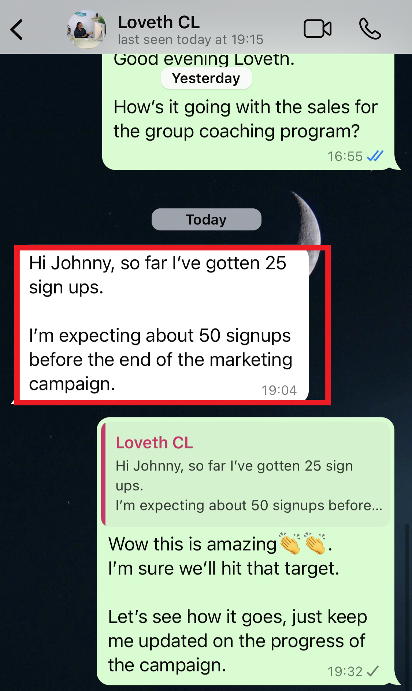

This is the same funnel I used to generate Loveth Samuel 25 new coaching clients in 33 days for her group coaching program.

If the price point of her coaching program was $2,000 per client…
25 clients = $50,000 in 33 days of using this New Lead Activator Framework...
Now let’s face it…
The biggest problem faced today by business coaches all over the world is…
They don’t know how to get more coaching clients for their coaching business.
You go on Reddit, Google, Binge, Facebook, and every other platform where business coaches are…
And that is what they’re constantly searching for day in and day out.
Looking for a predictable way to get more clients.
The problem is not that there are no clients in need of business coaches.
No. As a matter of fact, there’s currently a higher increase in the demand for business coaches globally than it has ever been.
Research by the US Census Bureau shows a record-breaking 5,490,437 new businesses were started in 2023…
And an average of 4.7 million businesses are launched every year in the United States alone
I’m very certain most of them have a limited understanding of running or scaling their business successfully...
What does this tell you as a business coach?
There are more coaching clients today than the number of coaches available.
That’s why when I see people complaining that the coaching industry is saturated I just smile.
Now let me tell you…
The coaching industry is not getting saturated and will not get saturated anytime soon.
There are more than enough clients for every business coach out there.
The only reason you struggle to get clients consistently is because…
You don’t have a predictable and streamlined system in place to generate you clients consistently.
This is why some months you’re lucky to get a few clients.
While some other months, you’re out there on the chase again…
So you often feel like you’re on a rollercoaster ride.
With months of great income followed by lean months where you scramble to find new clients.
And to solve this problem, you’ve tried various marketing strategies…
From social media advertising to networking events.
You’ve attended workshops, hosted webinars, created lead magnets…
And read countless articles on marketing but you haven’t seen the results you’re hoping for.
You’ve also tried posting content consistently on social media but it feels like you’re just shouting into a void most of the time.
And you feel frustrated…
Not just because you are not getting clients but because you know you can help more people out there.
But you just don’t know how to effectively market your services without wasting time and money.
So you end up feeling disappointed and frustrated as not getting clients any month would affect your income.
And you keep asking yourself this one question:
Will this constant uphill battle of getting clients consistently ever come to an end?
The answer is yes.
It will come to an end…
Or should I even say it has come to an end?
Because with this new lead activator funnel…
You can systematically generate 30-75 quality appointments every month, 80% on autopilot…
And get new 5-10 and even more potential coaching clients depending on your capacity.
Just imagine generating this much leads for your coaching business, how would you run out of coaching clients?
This is the fastest, easiest, and single best way any business coach around the globe can build a predictable client acquisition system…
Without wasting time and money on inefficient marketing.
And ultimately…
So you don’t have to worry about where your next coaching client is coming from each month.
“Johnny was recommended to me by my mentor and he created a high converting sales funnel that truly transformed my online sales…”
Limited Availability Alert!
“We can only work with 10 business coaches per time.
And we currently have 3 slots taken.
Don’t miss your opportunity to transform your coaching business’s client acquisition.”
Book Your Discovery Call Now Before Slots Fill Up.
 CLAIM YOUR FREE STRATEGY SESSION NOW.
CLAIM YOUR FREE STRATEGY SESSION NOW.
Now, here’s a breakdown of how this Lead Activator Funnel Works:
This is a simple 4-step process that helps you attract more coaching clients:
STEP 1: INNER HEAD MARKETING RESEARCH.
As the old saying goes, the foundation of every great business is market research.
But the issue with most agencies and freelancers today is they don’t dig deep when carrying out market research.
Which is that they don’t try to get into the head of your target audience to know the problems they want to solve so badly.
And this is exactly what my team and I spend most of our time on.
Digging deep into the head of your target audience…
To know their major pain points keeping them up at night that only you can solve for them.
Once we achieve that, we’re 50% done with the marketing campaign.
Then we move on to the next:
STEP 2: CREATE AN OFFER/SALES PROCESS THAT COVERTS COLD AUDIENCE TO PAYING CLIENTS.
Yes, after knowing what keeps your target audience at night with our inner head research process…
We craft an offer and a complete client journey for your target audience to make them see you as the only solution to their problem…
So they’ll be so eager to get on the call with you.
Is that all?
Of course not.
How do we reach your target audience?
We do this using paid ads.
STEP 3: Facebook, Instagram, or YouTube Advertising.
This is the most dependable, faster, and easier way to get your pipeline full with coaching clients.
I know you’ve most likely run paid ads before but didn’t get any results.
Now here’s why:
The agency or freelancer you hired to run the ads didn’t get the right messaging your target audience needs.
So they keep on showing your offer to the wrong audience who are not very interested in paying for coaching services.
What we do is, we use the data obtained from our thorough research process to create a scroll-stopping marketing message that speaks directly to your target audience.
That’s how we were able to generate over 5,000 quality leads for one of our clients:
We don’t just stop there…
We take them through the new lead activator funnel that filters out the uninterested leads.
And lastly, to keep the pipeline continually full…
We set up an email marketing process to nurture and build a list of interested buyers for your coaching services.
I would have said this is the most important part of our system.
But I rather not.
Because every step is connected to the other.
So if you want to see how this New Lead Activator Funnel can help you to consistently attract clients who value your services and are willing to invest in their growth…
Then click the button below to book a 45-minute discovery call with me.
During the discovery call, we'll:
Review your business and sales process to see how best we can implement this system in your business
Diagnose your specific client acquisition challenges.
Provide a preliminary roadmap for consistent client growth.
Once you plug this funnel into your business you’ll be getting clients predictably and consistently.
As you can see, the value of the discovery call is worth over $1,000 but you’ll be getting it at no cost.
Limited Availability Alert!
“We can only work with 10 business coaches per time.
And we currently have 3 slots taken.
Don’t miss your opportunity to transform your coaching business’s client acquisition.”
Book Your Discovery Call Now Before Slots Fill Up.
The truth is…
You don’t have to book the call.
You can just continue with your normal methods of posting consistently on social media…
Or continue wasting money on ads that don’t yield any returns on investment.
Or…
You can get on the discovery call with me…
Where I get to know more about your business and create a tailored strategy using the new lead activator funnel…
To help you get 30-75 red hot appointments in the next 45 days.
But wait a minute.
I wish I could tell you that this system works perfectly for every kind of business coach.
But the sad truth is it doesn’t.
We’ve tested this New Lead Activator Funnel with different types of business coaches…
And we realized it worked best with coaches that already have certain results from past or current clients.
In other words, experienced business coaches who have had 2 or more successful coaching clients and are ready to scale their coaching business.
So…
If you’re a startup coach with no results or no experience at all…
Or you’re a business coach with experience but not ready to scale your coaching business, then this is not for you.
Limited Availability Alert!
“We can only work with 10 business coaches per time.
And we currently have 3 slots taken.
Don’t miss your opportunity to transform your coaching business’s client acquisition.”
Book Your Discovery Call Now Before Slots Fill Up.